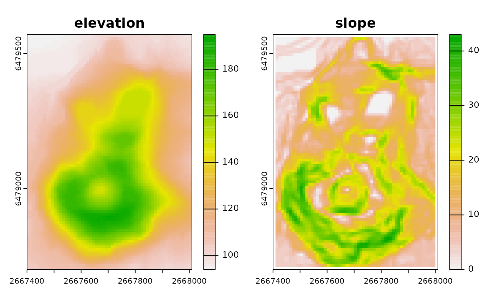

This function provides an interface mirroring that of the GDAL
command-line app gdaldem. For a description of the
utility and the arguments that it takes, see the documentation at
https://gdal.org/programs/gdaldem.html.
Arguments
- mode
Character, one of
"hillshade","slope","color-relief","TRI","TPI","roughness", indicating which of the available processing modes is to be used.- input_dem
Path to a GDAL-supported readable DEM datasource.
- output_map
Character. Path to a GDAL-supported output file.
- ...
Here, a placeholder argument that forces users to supply exact names of all subsequent formal arguments.
- of, compute_edges, alg, b, co, q, z, s, az, alt, combined
See the GDAL project's gdaldem documentation for details.
- multidirectional, igor, p, trigonometric, zero_for_flat
See the GDAL project's gdaldem documentation for details.
- color_text_file, alpha, exact_color_entry, nearest_color_entry
See the GDAL project's gdaldem documentation for details.
- config_options
A named character vector with GDAL config options, of the form
c(option1=value1, option2=value2). (See here for a complete list of supported config options.)- dryrun
Logical (default
FALSE). IfTRUE, instead of executing the requested call to GDAL, the function will print the command-line call that would produce the equivalent output.
Examples
# \donttest{
## Prepare file paths
td <- tempdir()
in_dem <- system.file("extdata/maunga.tif", package = "gdalUtilities")
out_slope <- file.path(td, "slope.tif")
out_shade <- file.path(td, "shade.tif")
out_aspect <- file.path(td, "aspect.tif")
## Apply DEM processing
gdaldem("slope", in_dem, out_slope)
gdaldem("shade", in_dem, out_shade)
gdaldem("aspect", in_dem, out_aspect)
## View results
if(require(terra)) {
op <- par(mfcol = c(1, 2))
plot(rast(in_dem), main = "elevation")
plot(rast(out_slope), main = "slope")
plot(rast(out_shade), main = "hillshade")
plot(rast(out_aspect), main = "aspect")
par(op) ## Reset parameters to preexisting values
}

 # }
# }